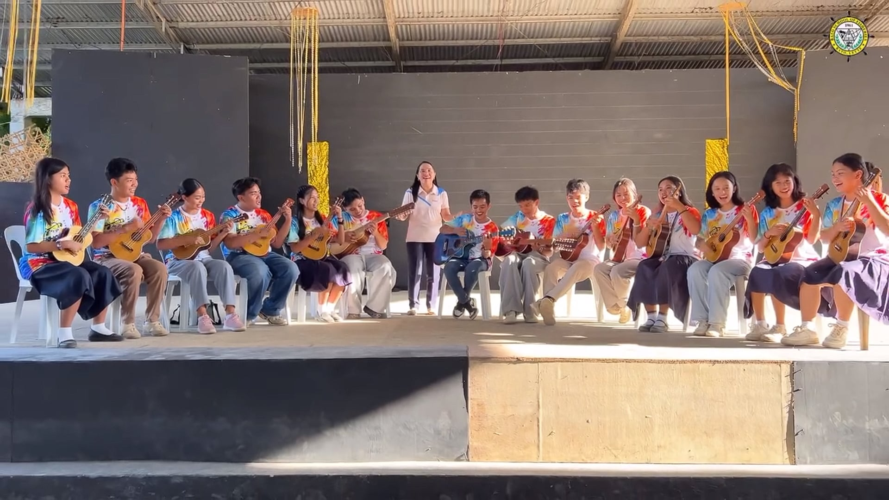
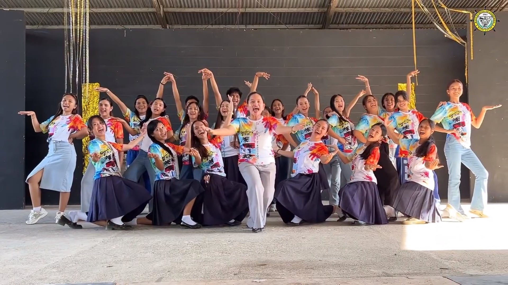

Special Program in Arts
Unleashing creative potential through discipline and passion.
About the Special Program in Arts
The Special Program in Arts (SPA) at BSF provides intensive training across six art disciplines while maintaining academic excellence.
Music
Learn singing, instruments, and music theory while joining groups like choir and orchestra.
Dance
Learn different styles like folk, ballet, and contemporary and join competitions.
Visual Arts
Learn painting, drawing, sculpture, printmaking, and digital art.
Theater Arts
Learn acting, writing plays, and performing on stage.
Media Arts
Photography, videography, and digital media production.
Creative Writing
Poetry, fiction, essays, and feature writing in Filipino and English.
SPA Students
A glimpse of our students expressing their talents across all disciplines.

Painting · Drawing · Sculpture · Digital Art

Choir · Orchestra · Rondalla · Vocal Training

Acting · Playwriting · Stagecraft

Folk · Contemporary · Hip-Hop · Ballet

Photography · Videography · Digital Media

Poetry · Fiction · Essays · Feature Writing